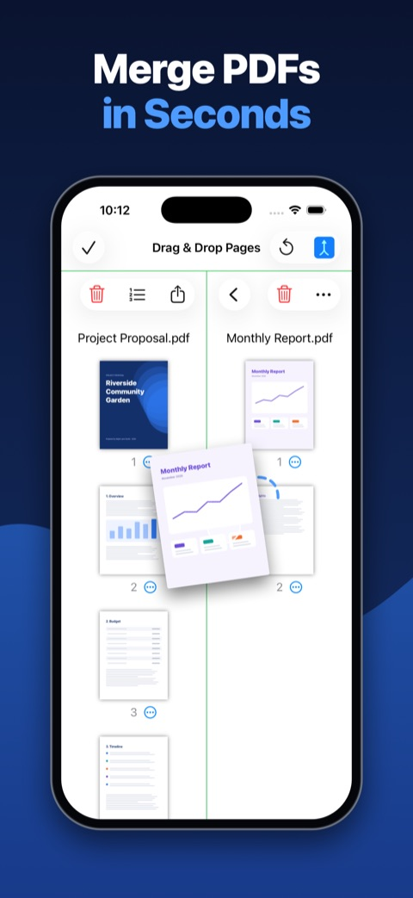

How to merge PDF files on iPhone
You have two PDFs, or ten, and you need to send them as one file. Here are two ways to do it on an iPhone or iPad, with no computer.
Updated November 2026
Method 1: The free Files app (quick, little control)
The Files app that comes with your iPhone can join files into one PDF.
- Open the Files app and go to the folder with your PDFs. If they are in different places, move them into one folder first.
- Tap the ••• button at the top right, then tap Select.
- Tap each file you want to combine.
- Tap ••• at the bottom right, then tap Create PDF.
A new PDF appears in the same folder. This works well for a quick job. The limits: you have little control over the page order, you can't remove or rearrange single pages, and the new file gets a generic name you will need to change.
Method 2: PDF Merge (choose every page)
Use this when the order matters, such as a job application, a visa file or a set of invoices.
- Open PDF Merge and tap to add your PDFs. You can pick files from iCloud Drive, Google Drive, Dropbox or OneDrive, and add photos or a fresh scan at the same time.
- Drag the pages into the order you want. Remove any page you don't need.
- Save the result as one PDF, then share it by email, Messages or WhatsApp, or save it to Files.

Which one should you use?
| Files app | PDF Merge | |
|---|---|---|
| Cost | Free, built in | Free to try, Premium for unlimited use |
| Choose page order | Limited | Yes, drag any page |
| Remove single pages | No | Yes |
| Mix PDFs, photos and scans | Partly | Yes |
| Works offline | Yes | Yes |
| Password-lock the result | No | Yes |
Common questions
Is it safe to merge PDFs on a website instead?
A website has to receive your files on its server to merge them. For private papers such as bank statements, payslips or ID, an app that works on your device is the safer choice.
Can I merge PDFs without internet?
Yes. Both methods above work offline, as long as the files are already on your iPhone.
Does this work on iPad?
Yes. The steps are the same on iPad.